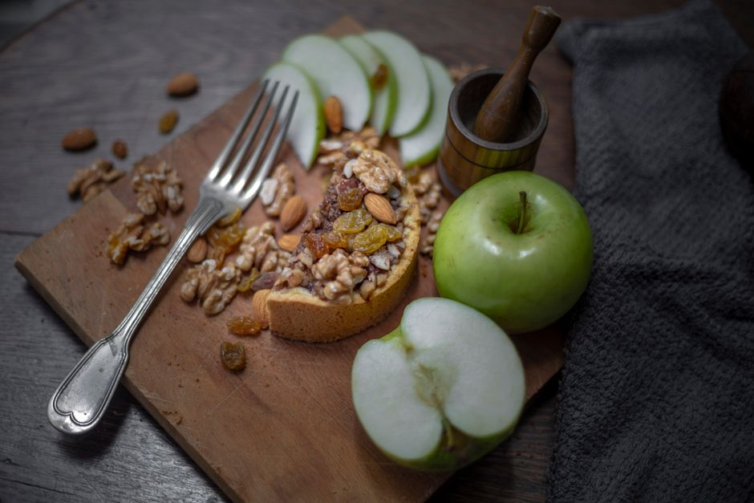
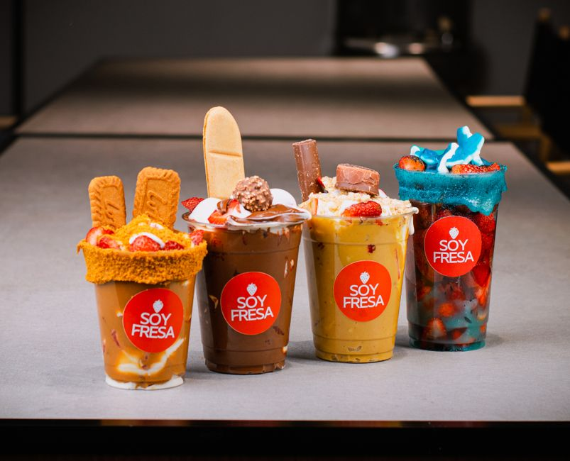
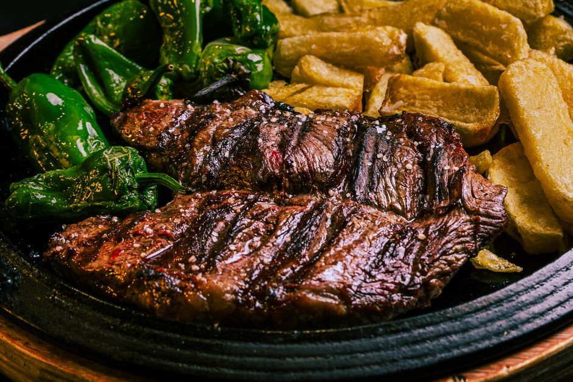
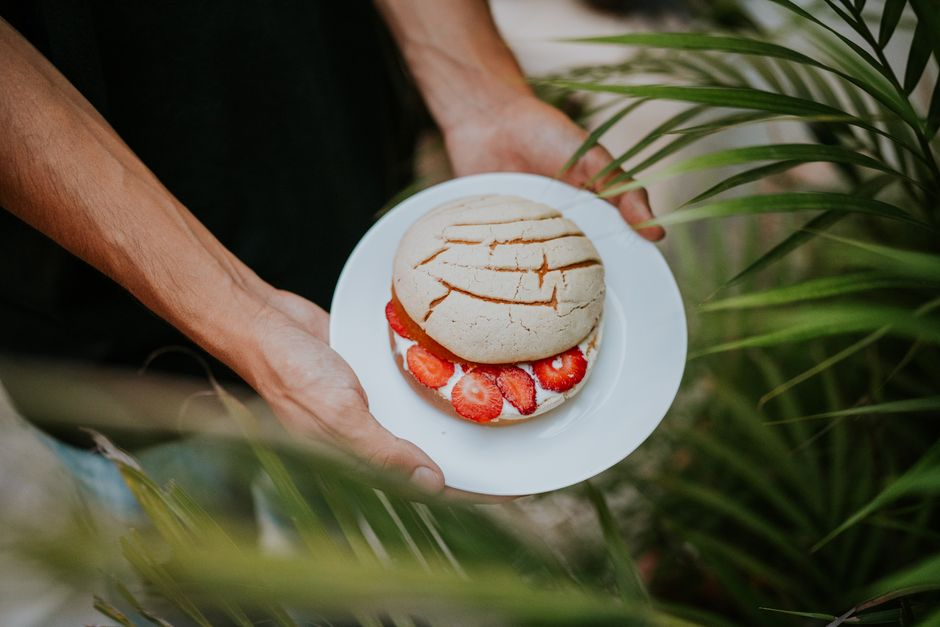
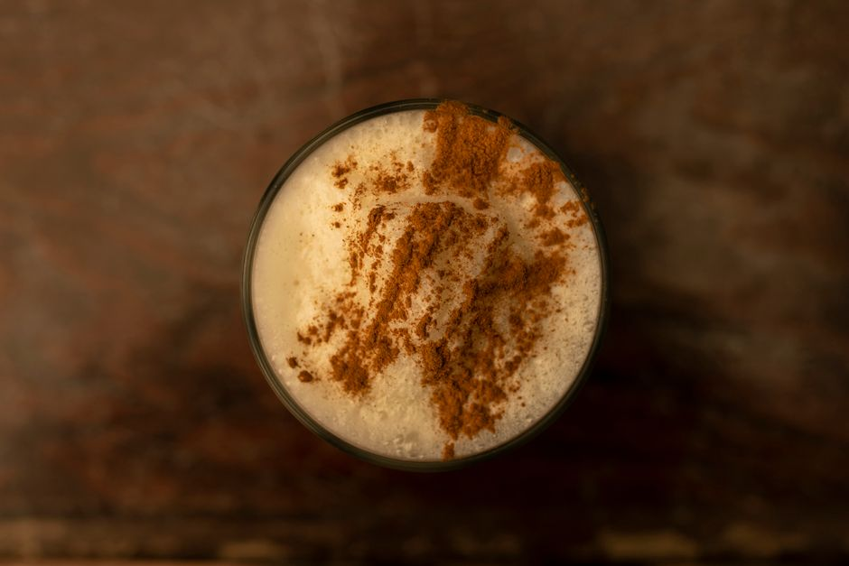

Suplementacion en deporte
6 producto(s) publicado(s)

Proteína de guisante en polvo sabor manzana
Proteína vegetal de guisante con sabor manzana natural. Ideal para batidos, yogures y smoothies. Complemento proteico versátil y refrescante.
0 vistas

Proteína de clara de huevo en polvo sabor fresa
Proteína de clara de huevo en polvo sabor fresa. Sin culpa, ligera y práctica. Complemento proteico de calidad sin grasas. ¡Descubre más!
0 vistas

Proteína de carne de res en polvo sabor natural
Proteína de carne de res en polvo sabor natural. Alta calidad, fácil de usar y perfecta para aumentar tu ingesta proteica. ¡Nutrición muscular de origen animal!
0 vistas
Proteína de huevo en polvo sabor neutro
Proteína de huevo en polvo sabor neutro de alta calidad. Versátil para batidos, postres y recetas. Sin alterar sabores. ¡Descubre sus beneficios!
1 vistas

Proteína de caseína micelar en polvo sabor vainilla
Caseína micelar en polvo sabor vainilla. Absorción lenta y duradera. Ideal para nutrición prolongada. ¡Compra ahora!
1 vistas

Proteína de suero de leche en polvo aislada sabor chocolate
Proteína de suero aislada en polvo sabor chocolate. Ideal para después del entrenamiento. Se disuelve fácil en agua o leche. ¡Compra ahora!
0 vistas